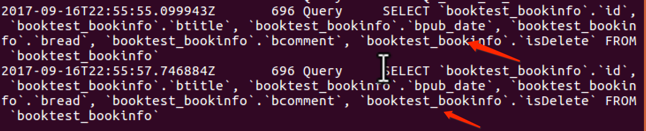

查询集 QuerySet
1 概念
Django的ORM中存在查询集的概念。
查询集，也称查询结果集、QuerySet，表示从数据库中获取的对象集合。
当调用如下过滤器方法时，Django会返回查询集（而不是简单的列表）：
- all()：返回所有数据。
- filter()：返回满足条件的数据。
- exclude()：返回满足条件之外的数据。
- order_by()：对结果进行排序。
对查询集可以再次调用过滤器进行过滤，如
BookInfo.objects.filter(bread__gt=30).order_by('bpub_date')
也就意味着查询集可以含有零个、一个或多个过滤器。过滤器基于所给的参数限制查询的结果。
从SQL的角度讲，查询集与select语句等价，过滤器像where、limit、order by子句。
判断某一个查询集中是否有数据：
- exists()：判断查询集中是否有数据，如果有则返回True，没有则返回False。
2 两大特性
1）惰性执行
创建查询集不会访问数据库，直到调用数据时，才会访问数据库，调用数据的情况包括迭代、序列化、与if合用
例如，当执行如下语句时，并未进行数据库查询，只是创建了一个查询集qs
qs = BookInfo.objects.all()
继续执行遍历迭代操作后，才真正的进行了数据库的查询
for book in qs:
print(book.btitle)
2）缓存
使用同一个查询集，第一次使用时会发生数据库的查询，然后Django会把结果缓存下来，再次使用这个查询集时会使用缓存的数据，减少了数据库的查询次数。
情况一：如下是两个查询集，无法重用缓存，每次查询都会与数据库进行一次交互，增加了数据库的负载。
from booktest.models import BookInfo
[book.id for book in BookInfo.objects.all()]
[book.id for book in BookInfo.objects.all()]


情况二：经过存储后，可以重用查询集，第二次使用缓存中的数据。
qs=BookInfo.objects.all()
[book.id for book in qs]
[book.id for book in qs]


3 限制查询集
可以对查询集进行取下标或切片操作，等同于sql中的limit和offset子句。
注意：不支持负数索引。
对查询集进行切片后返回一个新的查询集，不会立即执行查询。
如果获取一个对象，直接使用[0]，等同于[0:1].get()，但是如果没有数据，[0]引发IndexError异常，[0:1].get()如果没有数据引发DoesNotExist异常。
示例：获取第1、2项，运行查看。
qs = BookInfo.objects.all()[0:2]